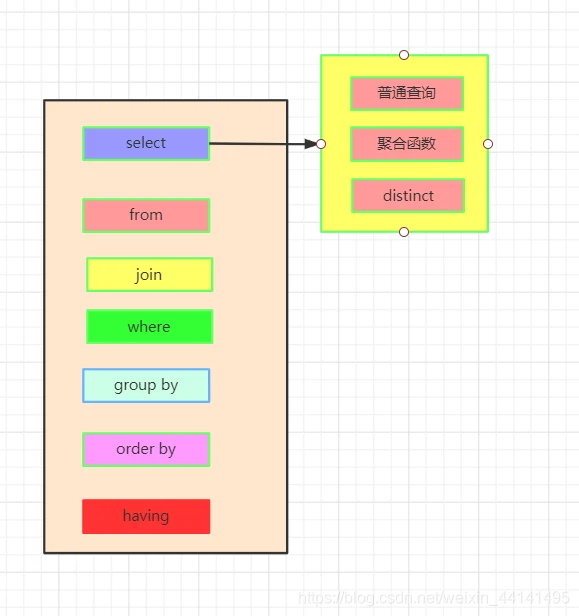
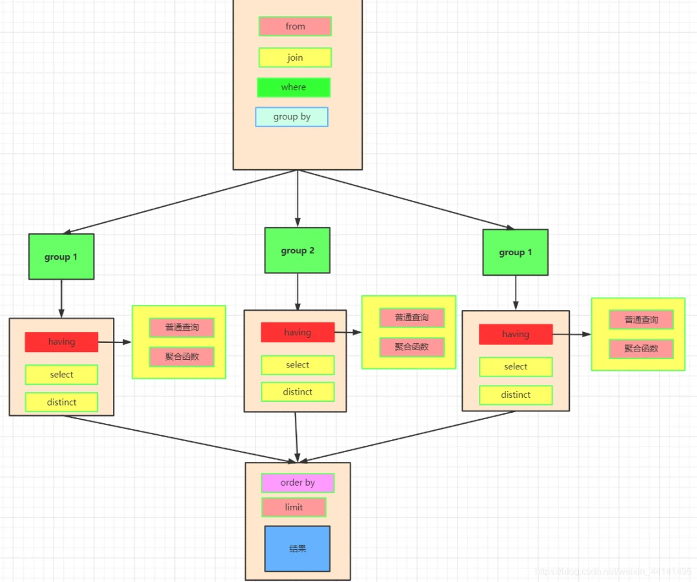
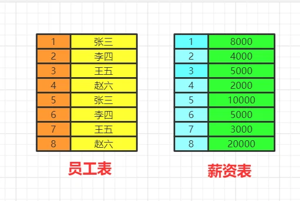
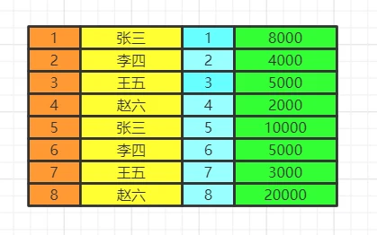
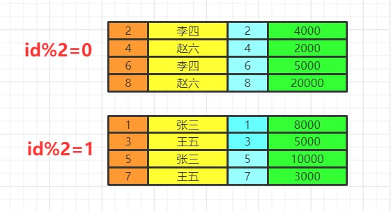
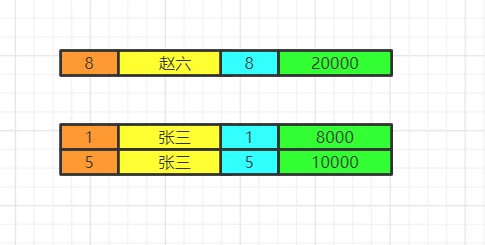
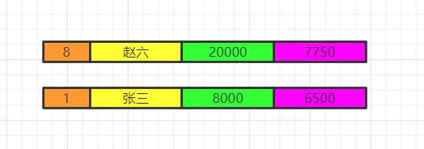
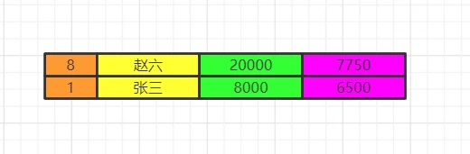
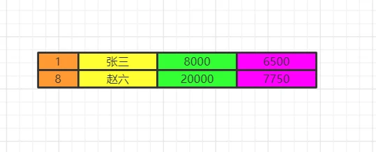
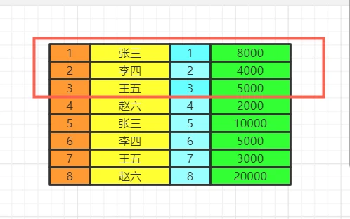

The order of execution of SQL statements is important to understand, especially when writing complex queries. Here’s the usual order:
FROM and JOINs: The FROM clause, and any JOINs are first executed. This determines and combines all the tables being used in the query.
WHERE: Once we know what tables are being used and how they’re connected, the WHERE clause filters down the data that’s going to be used for the next steps.
GROUP BY: The data we have so far is then grouped based on the columns specified in the GROUP BY clause.
Aggregation functions (MIN, MAX, AVG, COUNT, etc.): Any aggregation functions in the SELECT part of the query are then applied within each group of data.
HAVING: If a HAVING clause is present, it acts like a WHERE but for groups instead of individual rows.
SELECT: The specific columns mentioned in the SELECT statement are then calculated and returned.
ORDER BY: If an ORDER BY clause is present, the returned result set is sorted accordingly.
LIMIT: If a LIMIT clause is present, the final result set is limited to a certain number of rows.
执行顺序
- from
- on join 联表，把需要查询的表聚合起来
- where 条件过滤
- group by 对过滤的条件进行分组
- having 对每一个分组分别进行条件过滤
- select 现在数据，然后进行函数count、max、distinct等的计算
- order by 对数据进行排序
- limit 最后才进行截取，需要注意的是排序是在截取前面的，如果先截取在排序，那么就可能造成数据不符合预期
图解 SQL 的执行顺序
这是一条标准的查询语句:

这是我们实际上SQL执行顺序：
我们先执行from,join来确定表之间的连接关系，得到初步的数据
where对数据进行普通的初步的筛选
group by 分组
各组分别执行having中的普通筛选或者聚合函数筛选。
然后把再根据我们要的数据进行select，可以是普通字段查询也可以是获取聚合函数的查询结果，如果是集合函数，select的查询结果会新增一条字段
将查询结果去重distinct
最后合并各组的查询结果，按照order by的条件进行排序

数据的关联过程
数据库中的两张表

from&join&where
用于确定我们要查询的表的范围，涉及哪些表。
选择一张表，然后用join连接
from table1 join table2 on table1.id=table2.id
选择多张表，用where做关联条件
from table1,table2 where table1.id=table2.id
我们会得到满足关联条件的两张表的数据，不加关联条件会出现笛卡尔积。

group by
按照我们的分组条件，将数据进行分组，但是不会筛选数据。
比如我们按照即id的奇偶分组

having&where
having中可以是普通条件的筛选，也能是聚合函数。而where只能是普通函数，一般情况下，有having可以不写where，把where的筛选放在having里，SQL语句看上去更丝滑。
使用where再group by
先把不满足where条件的数据删除，再去分组
使用group by再having
先分组再删除不满足having条件的数据，这两种方法有区别吗，几乎没有！
举个例子：
100/2=50，此时我们把100拆分(10+10+10+10+10…)/2=5+5+5+…+5=50,只要筛选条件没变，即便是分组了也得满足筛选条件，所以where后group by 和group by再having是不影响结果的！
不同的是，having语法支持聚合函数,其实having的意思就是针对每组的条件进行筛选。我们之前看到了普通的筛选条件是不影响的，但是having还支持聚合函数，这是where无法实现的。
当前数据分组情况

执行having的筛选条件，可以使用聚合函数。筛选掉工资小于各组平均工资的having salary<avg(salary)

select
分组结束之后，我们再执行select语句，因为聚合函数是依赖于分组的，聚合函数会单独新增一个查询出来的字段，这里用紫色表示，这里我们两个id重复了，我们就保留一个id，重复字段名需要指向来自哪张表，否则会出现唯一性问题。最后按照用户名去重。
select employee.id,distinct name,salary, avg(salary)

将各组having之后的数据再合并数据。
order by
最后我们执行order by 将数据按照一定顺序排序，比如这里按照id排序。如果此时有limit那么查询到相应的我们需要的记录数时，就不继续往下查了。

limit
记住limit是最后查询的，为什么呢？假如我们要查询年级最小的三个数据，如果在排序之前就截取到3个数据。实际上查询出来的不是最小的三个数据而是前三个数据了，记住这一点。
我们如果limit 0,3窃取前三个数据再排序，实际上最少工资的是2000,3000,4000。你这里只能是4000,5000,8000了。
